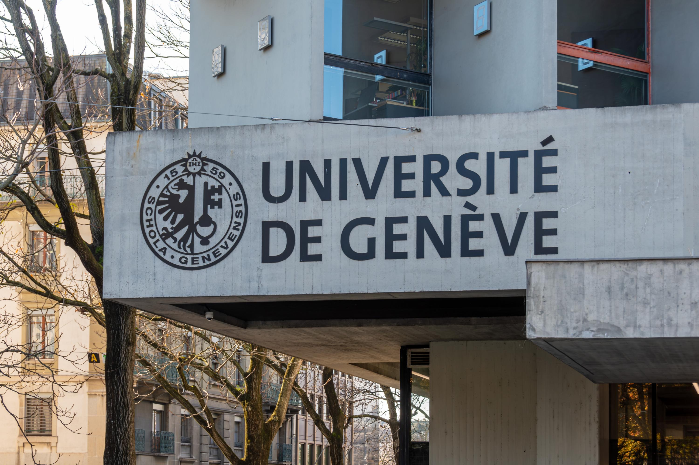
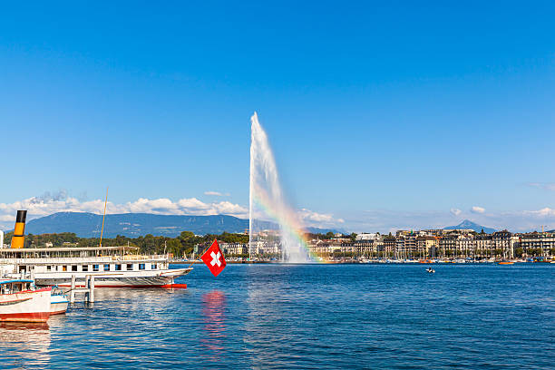
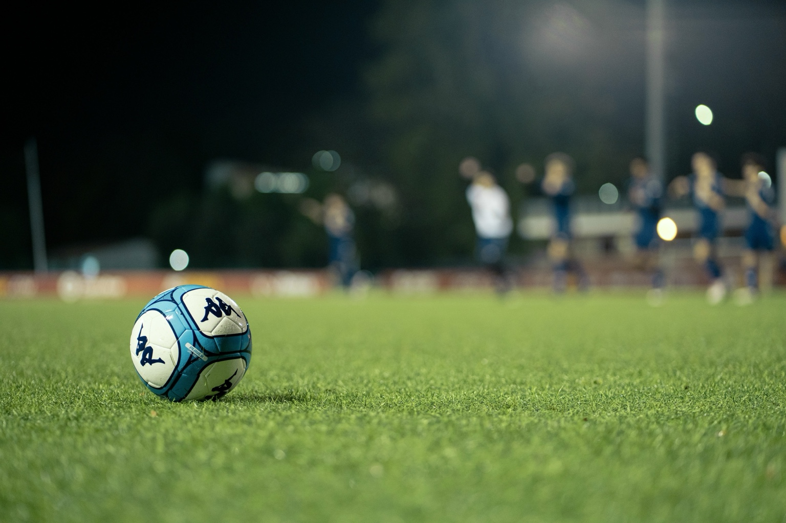
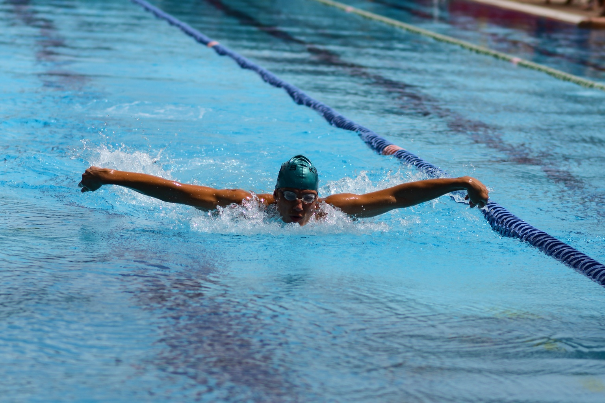
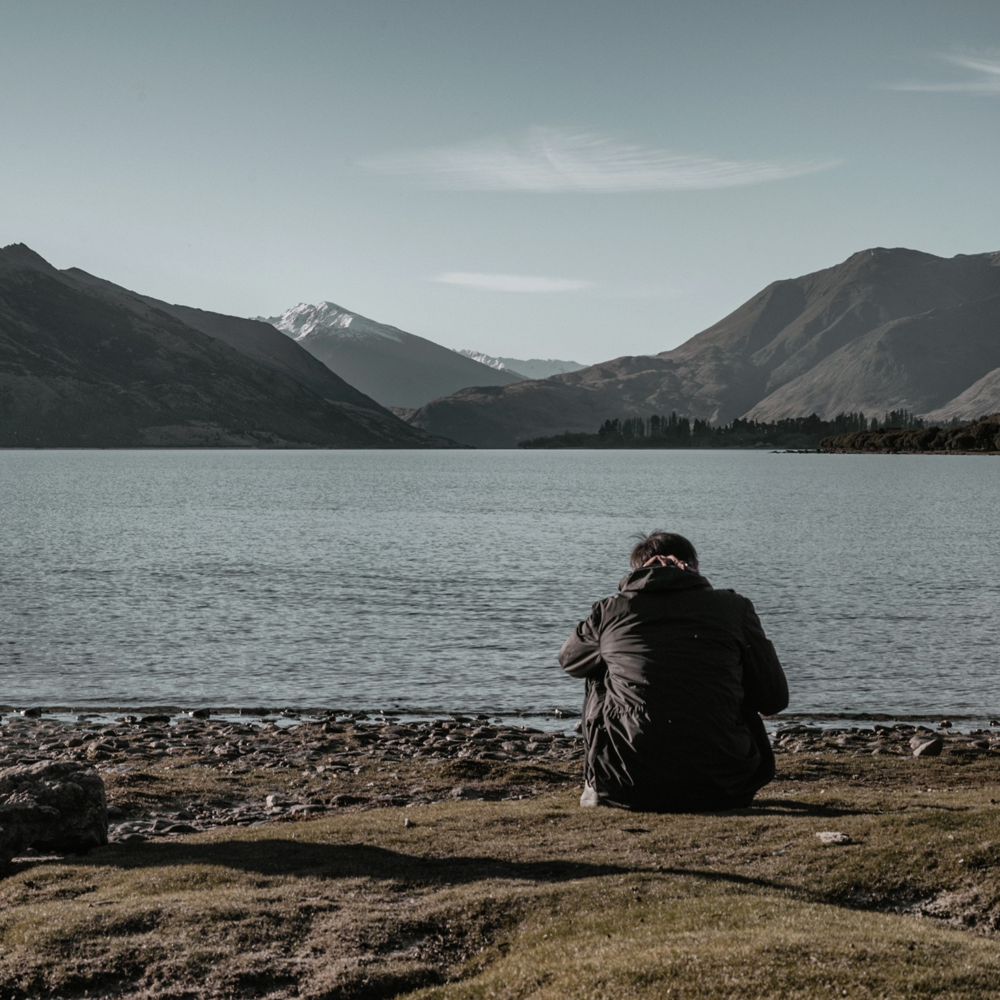

Tennis
Étudiant en économie & management
Apprendre aujourd’hui,
construire demain.
Curieux, polyvalent et motivé, je m’adapte rapidement, apprends avec facilité et m’investis pleinement dans tout ce que j’entreprends.
À propos
Je m’adapte rapidement et apprends avec facilité. Sérieux et à l’aise avec les autres, je m’investis pleinement dans tout ce que j’entreprends. Passionné par l’économie, la technologie et le sport, je cherche toujours à relever de nouveaux défis, tant académiques que personnels.

Une meilleure
version de moi,
chaque jour.

Mes centres d’intérêt
Plus que des passions,
un équilibre.



Mon parcours

“
Des défis différents,
les mêmes valeurs :
discipline, curiosité,
progression.

Expériences & activités
Apprendre par la pratique.


Compétences & langues
Langues
Certificats
Voir le CV ↗